Ten fighters, one ring, one network. What the policy sees, what it wants, and what actually drives the arms — read at whichever depth you need.
A nine-kill sweep of the ten-way, decomposed. Outcomes carry the return; damage is the smallest share — which is the whole point of the rebalance.
Run pr_v6_spar_01 · stage 1b, learner against the scripted sparring partner · 43 summaries.
The vertical rule marks the target. Reward crossed from negative to positive around step 120k — the moment the policy stopped simply losing. Per the project's own rule, nothing under ~2M steps is a trend: per-summary swings of ±0.4 here are noise.
Conceptual — the loop without the machinery.


Shapes read from the ONNX file, not inferred from the config.

What CollectObservations writes, in order. Twenty floats, stacked twice.
| # | Observation | Normalisation | Why it is there |
|---|---|---|---|
| 0 | health | ÷ MaxHealth | how close to going out |
| 1–2 | facing | unit | the face arc is centred on it |
| 3–4 | move input | −1…1 | what it asked for last tick |
| 5 | left arm extension | 0…1 | mid-punch or not |
| 6 | left arm ready | 0/1 | can it throw |
| 7 | right arm extension | 0…1 | — |
| 8 | right arm ready | 0/1 | — |
| 9 | survivors | ÷ roster | how far through the battle royale |
| 10 | stamina | 0…1 | throughput and damage both scale off it |
| 11–12 | ring position | ÷ half extent | rays give distance, not which corner |
| 13–14 | velocity | ÷ MoveSpeed | it coasts; intent and travel diverge |
| 15 | stun | ÷ MaxStun | a boxer knows when its legs have gone |
| 16–17 | bearing to nearest | cos, sin | exact and signed where 17 rays are coarse; survives an opponent behind it |
| 18 | range to nearest | ÷ ring diagonal | — |
| 19 | incoming punch | 0…1 | without it the slip is unusable: the window only exists for something that can see an arm travelling |
Bold entries are new. Alongside these the ray sensor contributes 17 × (3 tags + 2) = 85 floats at one stack — 180° of forward vision, reach 24, batched casts. A fighter is deliberately blind behind it.



Six revolute DOF per fighter. No ArticulationBody, no ConfigurableJoint, no SLERP — a 2D hinge has no orientation to interpolate.
| Segment | Mass | Joint | Limits | Torque | Colliders |
|---|---|---|---|---|---|
| Torso | 1.00 | kinematic | — | — | circle r 0.64 · face probe r 0.80 |
| Upper arm | 0.030 | shoulder → torso | −45…80° | 260 | capsule 0.28 × 0.73 |
| Forearm | 0.018 | elbow → upper arm | 0…145° | 143 | capsule 0.28 × 0.78 |
| Glove | 0.012 | wrist → forearm | ±25° | 52 | circle r 0.30 |

| Setting | spar | ppo | ffa | Note |
|---|---|---|---|---|
| batch / buffer | 1024 / 10240 | 1024 / 10240 | 2048 / 20480 | ten agents produce more per step |
| beta | 1.0e-3 | 5.0e-3 | 2.0e-3 | ffa transfers in with entropy already low |
| gamma | 0.997 | 0.997 | 0.997 | 500 decisions, not 300 — was 0.995 |
| time_horizon | 256 | 256 | 256 | was 128, below the discount horizon |
| max_steps | 5M | 8M | 8M | — |
| keep_checkpoints | 50 | 40 | 80 | must cover max_steps ÷ interval |
| self_play | — | yes | — | an FFA is not a two-team game |
One network drives all six. StyleModulator bends the actions it produced on the way to the boxer — so they share a brain and differ in how they use it. Bars are magnitude on one hue; the coloured chip is the fighter's ring colour, carrying identity only.